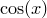

Before beginning a more systematic tutorial in Chapter 3, we provide a brief tour of a subset of PyXPlot’s features, with references to those chapters of this manual where further details can be found. This section should provide some flavour of the wide range of tasks for which PyXPlot can be used. This is not the place for long-winded explanations of the syntax of each of the quoted PyXPlot commands, but most of the examples will work if pasted directly into a PyXPlot command prompt.
We will assume that the user has already successfully installed PyXPlot, and has just opened a new PyXPlot command prompt. For instructions on how to install PyXPlot, see Chapter 2.
The first command which any such tour must visit – the workhorse command of PyXPlot – is the plot command. This can be used to plot graphs of either mathematical functions, by typing, for example
plot log(x)
or datafiles, by typing1
plot 'datafile.dat'
There are many commands which allow you to configure the appearance of the plots produced by the plot command, or to select which data from a datafile are plotted; these will be discussed at length in Chapters 3 and 1.
PyXPlot has extensive facilities for converting datafiles between different physical units – for example, you can tell it that a column of a datafile represents lengths measured in inches, and request it to plot those lengths on a graph in millimetres. These facilities can also be applied to numerical quantities entered by the user. For example, you can define a variable which has physical dimensions of length, and then display its value in different units as follows:
x = 2 * unit(m) print x / unit(inch)
When arithmetic operations are applied to numerical quantities which have physical units, the units propagate intuitively: in the above example, x*x would compute to four square metres. However, the expression x*x+x would throw an error message because it is not dimensionally correct: the first term has dimensions of area whilst the second term has dimensions of length, and these cannot be added. More details of the use of physical units in PyXPlot are given in Section 1.6, and Appendix 4 lists all of the physical units which PyXPlot recognises by default.
Users can add their own units to those recognised by PyXPlot by means of a configuration file, and these can be declared either as alternative measures of existing quantities such as length or mass, or as measures of new base quantities such as man-hours of labour or numbers of CPU cycles. More details about how to do this are given in Chapter 8.
The way in which physical units are displayed can be extensively configured – for example, the automatic use of SI prefixes such as milli- and kilo- is optional, and the user can request that quantities be displayed in CGS or imperial units by default. Other settings instruct PyXPlot to display numerical results in a way which can be pasted into future PyXPlot sessions – 2*unit(m) instead of  – or in LaTeX source code, as $
– or in LaTeX source code, as $ ,
, mathrm{m}$.
mathrm{m}$.
PyXPlot can perform algebra on complex as well as real numbers. By default, evaluation of sqrt(-1) throws an error, as the emergence of complex numbers is often an indication that a calculation has gone wrong. Complex arithmetic can be enabled by typing
set numerics complex print sqrt(-1)
Many of the mathematical functions which are built into PyXPlot, a complete list of which can be found in Appendix 2 or by typing show functions, can take complex arguments, for example
print exp(2+3*i) print sin(i)
For more details, see Section 1.5.
In the above example, the variable i is a pre-defined constant in PyXPlot, in this case set to equal . PyXPlot has many other pre-defined physical and mathematical constants, and complete list of which can found in Appendix 3 or by typing show variables. These, together with the physical units which are built into PyXPlot make it easy to answer a wide range of questions very quickly. In the following examples, and throughout this Users’ Guide, we show the commands typed by the user in bold face, preceded by PyXPlot prompts pyxplot> and followed by the text returned by PyXPlot. Any comments are shown in italic face preceded by a hash character (#).
What is F in Celsius?
pyxplot> print 80*unit(oF) / unit(oC)
26.666667
How long does it take for light to travel from the Sun to the Earth?
pyxplot> print unit(AU) / phy_c
499.00478 s
What wavelength of light corresponds to the ionisation energy of hydrogen (13.6 eV)?
pyxplot> print phy_c * phy_h / (13.6 * unit(eV))
91.164844 nm
What is the escape velocity of the Earth?
pyxplot> print sqrt(2 * phy_G * unit(Mearth) / unit(Rearth))
11.186948 km/s
In addition, PyXPlot provides extensive functions for numerically solving equations, which will be described in detail in Chapter 5. The following example evaluates  :
:
pyxplot> print int_dx(x**2,0*unit(s),2*unit(s))
2.6666667 s**3
This example solves a simple pair of simultaneous equations of two variables:
pyxplot> solve x+y=1 , 2*x+3*y=7 via x,y
pyxplot> print "x=%s; y=%s"%(x,y)
x=-4; y=5
And this third example searches for the minimum of the function  closest to :
pyxplot> x=0.5
pyxplot> minimise cos(x) via x
pyxplot> print x
3.1415927
This tour has touched briefly upon a few areas of PyXPlot’s functionality, but has not described its facilities for producing vector graphics, which will be discussed in detail in Chapter 2 with numerous examples.
Footnotes